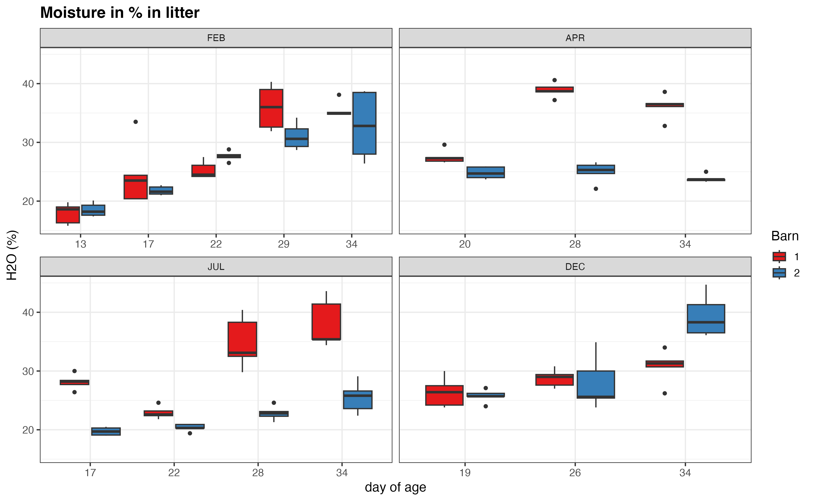
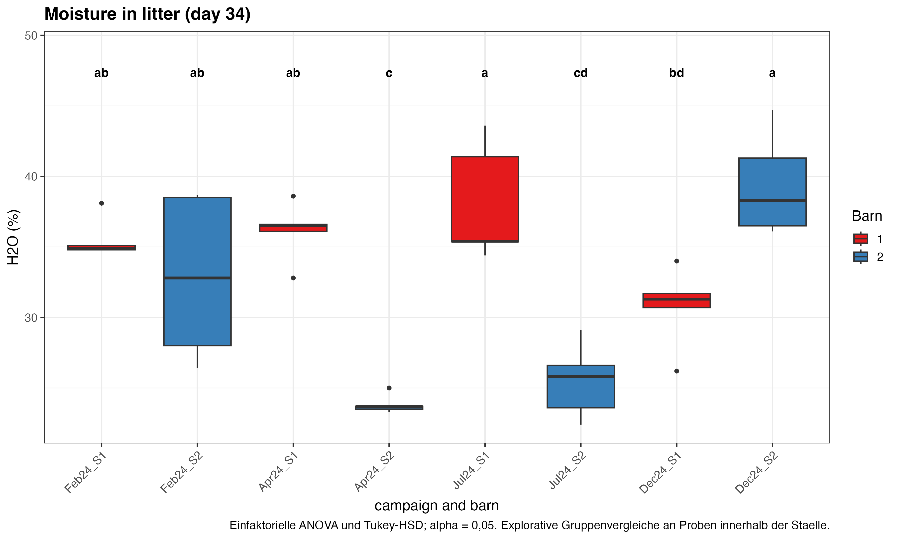
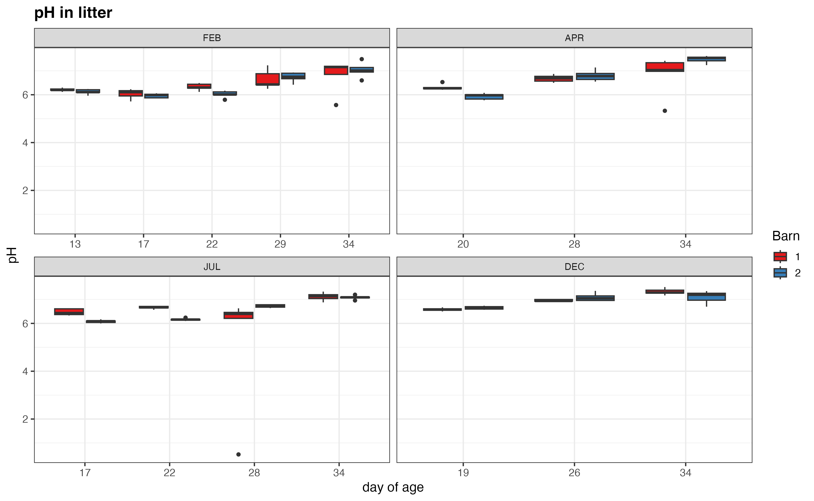
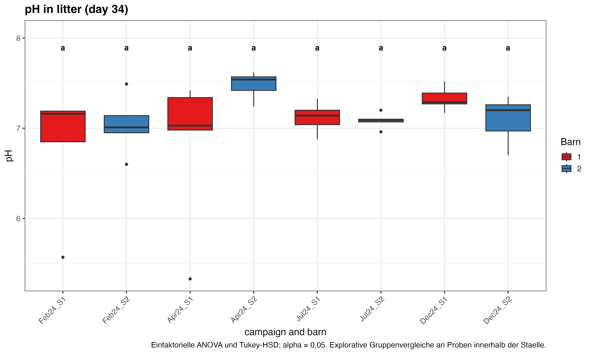
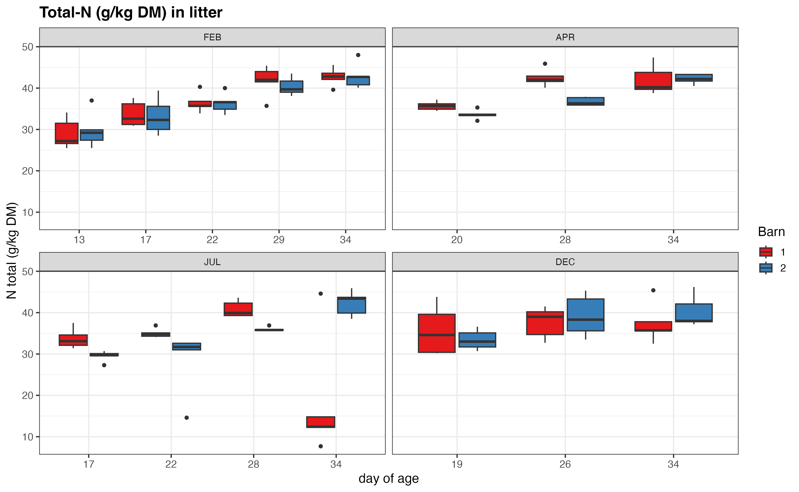
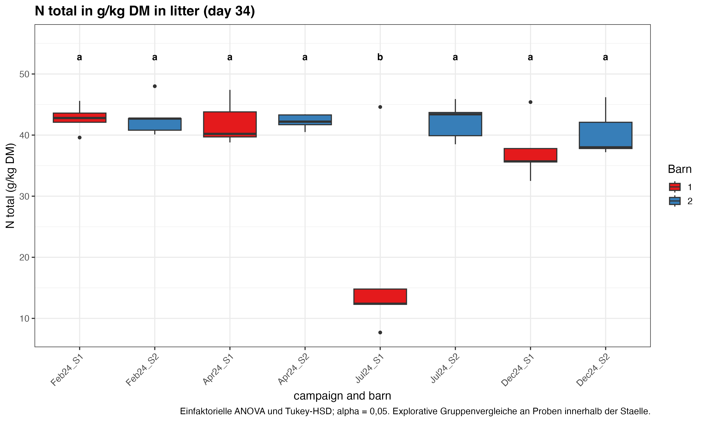
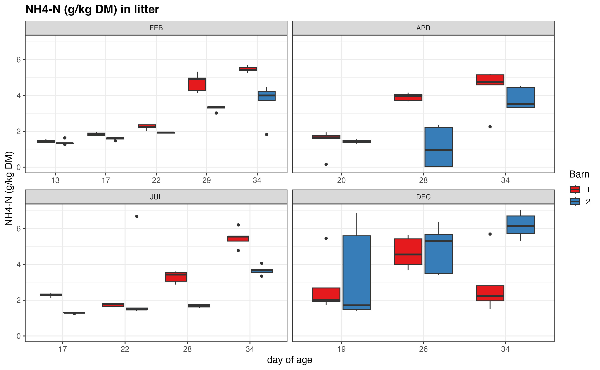
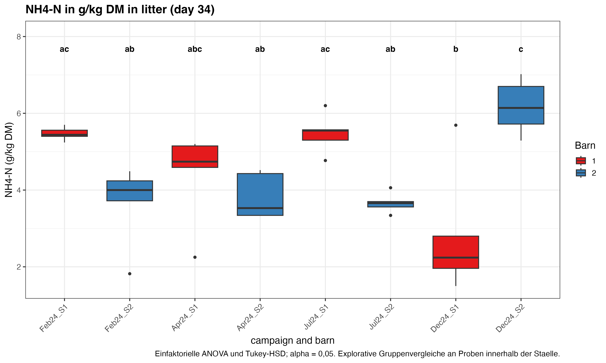

150 Proben; Tag 34: 40 Proben in 8 Gruppen. Kampagnen: Februar 24, April 24, Juli 24, Dezember 24.
Mittelwert +/- Standardabweichung der Proben (SD). Mindestens ein gemeinsamer Buchstabe: kein nachgewiesener Unterschied. Ohne gemeinsamen Buchstaben: adjustiertes p < 0,05. Einfaktorielle ANOVA und Tukey-HSD; alle Kampagne-Stall-Gruppen je Merkmal werden verglichen.
Wiederholungen sind Einstreuproben innerhalb eines Stalls, keine unabhaengigen Staelle oder Kampagnen. Die Tests sind explorativ und belegen keinen kausalen WRG-Effekt. Dezember 2024 und August 2026: beide Staelle ohne WRG. Die Probenstreuung ist kein pauschaler Messfehler aus der NH3-Auswertung.
Mindestens ein Merkmal zeigt Abweichungen von Normalverteilung oder gleicher Varianz. Es wird die eingestellte Methode verwendet, ohne datenabhaengigen Methodenwechsel. Alternativen sind im Skript einstellbar.
Auffaellige Quellwerte bleiben enthalten, unter anderem pH 0,52 im Juli 2024. NH4-N bezeichnet den Laborparameter Ammoniumstickstoff. DM und TS bezeichnen dieselbe Trockenmassebasis. Die bekannten Phosphor-/Mineralstoff-Beschriftungsprobleme betreffen die vier verwendeten Merkmale nicht.


Tabelle 8: Feuchtigkeit der Einstreu am 34. Masttag.
| Stall | Messkampagne | Feuchtigkeit der Einstreu am 34. Masttag [%] |
|---|---|---|
| Stall 1 (Referenz) | Februar 24 | 35,5 ± 1,4ab |
| Stall 2 (WRG) | 32,9 ± 5,7ab | |
| Stall 1 (Referenz) | April 24 | 36,1 ± 2,1ab |
| Stall 2 (WRG) | 23,8 ± 0,7c | |
| Stall 1 (Referenz) | Juli 24 | 38,0 ± 4,2a |
| Stall 2 (WRG) | 25,5 ± 2,6cd | |
| Stall 1 (Referenz) | Dezember 24 | 30,8 ± 2,8bd |
| Stall 2 (WRG nicht in Betrieb) | 39,4 ± 3,6a |


Tabelle 9: pH der Einstreu am 34. Masttag.
| Stall | Messkampagne | pH der Einstreu am 34. Masttag [pH] |
|---|---|---|
| Stall 1 (Referenz) | Februar 24 | 6,79 ± 0,70a |
| Stall 2 (WRG) | 7,04 ± 0,32a | |
| Stall 1 (Referenz) | April 24 | 6,82 ± 0,85a |
| Stall 2 (WRG) | 7,48 ± 0,15a | |
| Stall 1 (Referenz) | Juli 24 | 7,12 ± 0,17a |
| Stall 2 (WRG) | 7,08 ± 0,09a | |
| Stall 1 (Referenz) | Dezember 24 | 7,33 ± 0,13a |
| Stall 2 (WRG nicht in Betrieb) | 7,10 ± 0,26a |


Tabelle 10: Gesamtstickstoff der Einstreu am 34. Masttag.
| Stall | Messkampagne | Gesamtstickstoff der Einstreu am 34. Masttag [g/kg TS] |
|---|---|---|
| Stall 1 (Referenz) | Februar 24 | 42,7 ± 2,2a |
| Stall 2 (WRG) | 42,9 ± 3,1a | |
| Stall 1 (Referenz) | April 24 | 42,0 ± 3,6a |
| Stall 2 (WRG) | 42,2 ± 1,2a | |
| Stall 1 (Referenz) | Juli 24 | 18,4 ± 14,9b |
| Stall 2 (WRG) | 42,3 ± 3,0a | |
| Stall 1 (Referenz) | Dezember 24 | 37,4 ± 4,9a |
| Stall 2 (WRG nicht in Betrieb) | 40,3 ± 3,8a |


Tabelle 11: Ammoniumstickstoff der Einstreu am 34. Masttag.
| Stall | Messkampagne | Ammoniumstickstoff der Einstreu am 34. Masttag [g/kg TS] |
|---|---|---|
| Stall 1 (Referenz) | Februar 24 | 5,47 ± 0,17ac |
| Stall 2 (WRG) | 3,65 ± 1,06ab | |
| Stall 1 (Referenz) | April 24 | 4,39 ± 1,22abc |
| Stall 2 (WRG) | 3,83 ± 0,59ab | |
| Stall 1 (Referenz) | Juli 24 | 5,48 ± 0,52ac |
| Stall 2 (WRG) | 3,66 ± 0,26ab | |
| Stall 1 (Referenz) | Dezember 24 | 2,84 ± 1,66b |
| Stall 2 (WRG nicht in Betrieb) | 6,17 ± 0,70c |
R-Dokumentation: TukeyHSD; multcompView. Korrektur der Paarvergleiche je Merkmal innerhalb des dargestellten Kampagnensatzes; keine zusaetzliche Korrektur ueber verschiedene Merkmale.